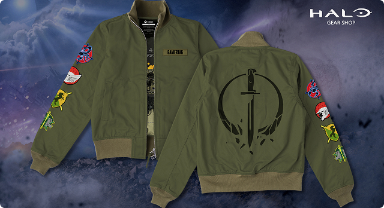
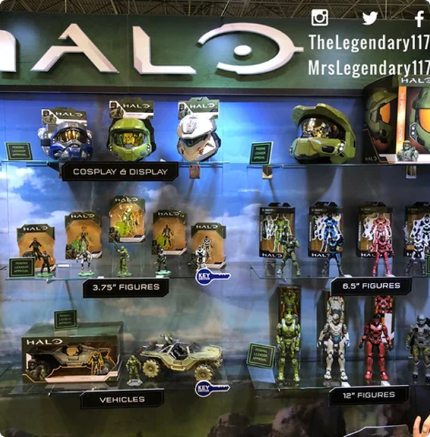
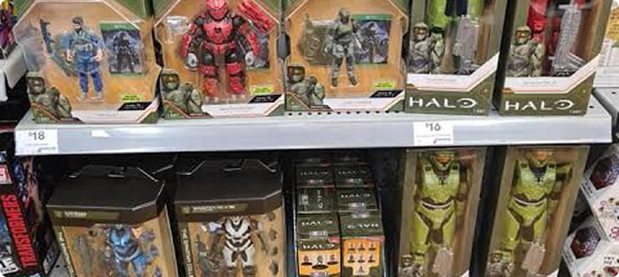
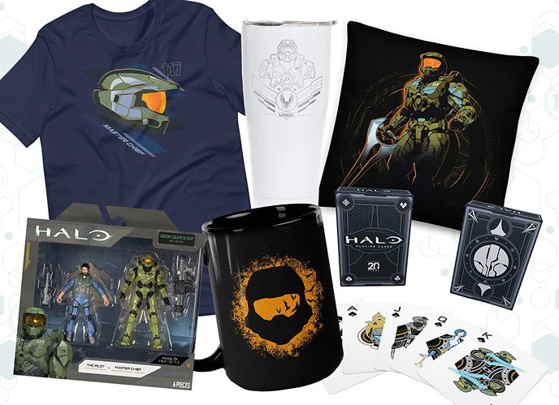

Cameos y referencias
Encuentra los guiños, cameos y referencias de Halo que quizá pasaste por alto.
Ver
La mercancía de Halo es una de las líneas de productos derivadas más extensas de la industria de los videojuegos. Desde los primeros años de la saga, el universo de Halo ha generado objetos coleccionables, juguetes, prendas de vestir, accesorios tecnológicos y réplicas, dirigidos tanto a jugadores de larga data como a quienes conocen la franquicia por su impacto cultural. Su diseño visual, con el casco del Jefe Maestro, la armadura Mjolnir, las naves del Covenant y los logotipos de la UNSC, se presta especialmente bien a productos que buscan reproducir la estética del juego en el mundo físico.


Uno de los segmentos más visibles es el de las figuras de acción y los coleccionables. Diversos fabricantes han producido figuras del Jefe Maestro, de los Élites del Covenant y de otros personajes, con distintos niveles de detalle y escala. Las líneas de figuras en formato de vinilo, muy populares entre coleccionistas, también han incluido versiones de los personajes principales. Además, la franquicia ha tenido presencia en juegos de construcción de bloques, con sets que recrean escenas, vehículos y personajes, algo que la ha acercado a un público infantil y familiar.
La saga también ha tenido una relación cercana con las pistolas de juguete de tipo Nerf. Ciertas versiones inspiradas en las armas de Halo, como el icónico rifle de asalto o la pistola de la UNSC, se comercializaron como réplicas de juguete para jugar al aire libre o en interiores. Este tipo de producto conecta con la experiencia del jugador, pues permite recrear en el mundo real los enfrentamientos de la campaña y del multijugador.
Como franquicia insignia de Xbox, Halo ha sido el motivo de varias ediciones especiales de consolas y mandos. Los controladores con diseños temáticos, en colores y acabados inspirados en la armadura Spartan o en vehículos de la saga, son de los productos más buscados por los fans. Estas ediciones suelen convertirse en objetos de colección, sobre todo cuando se lanzan en cantidades limitadas o en fechas asociadas a una entrega nueva.


La mercancía textil incluye camisetas, sudaderas, gorras y otras prendas con logotipos, símbolos del Covenant o referencias a la UNSC. También existen artículos de uso cotidiano como tazas, mochilas, llaveros, cuadernos y fundas para dispositivos. Estos productos suelen ser la puerta de entrada más sencilla para quienes quieren mostrar su afición sin buscar piezas de coleccionista.
Encuentra los guiños, cameos y referencias de Halo que quizá pasaste por alto.
Ver
El contenido protegido por derechos de autor que pueda aparecer en este sitio, como imágenes, capturas de pantalla, ilustraciones, logotipos, fragmentos audiovisuales o referencias, se utiliza únicamente como material de apoyo, comentario, análisis, crítica, documentación o demostración de los temas tratados. La inclusión de estos materiales no pretende reclamar su propiedad ni transferir ningún derecho sobre ellos.